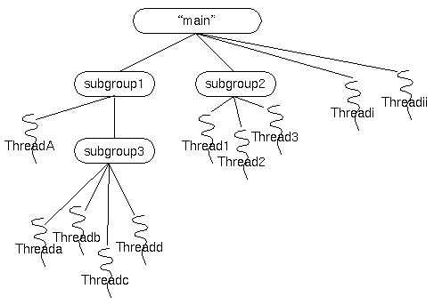

Apache Gobblin
A distributed data integration framework that simplifies common aspects of big data integration such as data ingestion, replication, organization and lifecycle management for both streaming and batch data ecosystems.

Latest News
Execution Modes
Standalone
Runs as standalone application on a single box. Also supports embedded mode.

Mapreduce Mode
Runs as an mapreduce application on multiple Hadoop versions. Also supports Azkaban for launcing mapreduce jobs.

Yarn / Mesos
Runs as a standalone cluster with primary and worker nodes. This mode supports high availability, and can run on bare metals as well.

Cloud
Runs as elastic cluster on public cloud. This mode supports high availability.